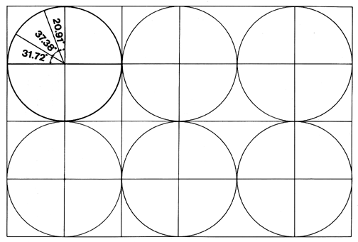

Fig. 986.505 Six Intertangent Great-circle Discs in 12-inch Module Grid: The four 90 degree quadrants are folded at the central angles indicated for the T Quanta Module.
Copyright © 1997 Estate of R. Buckminster Fuller